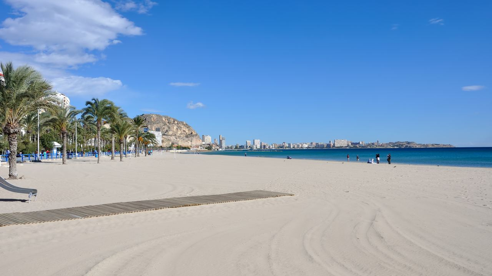
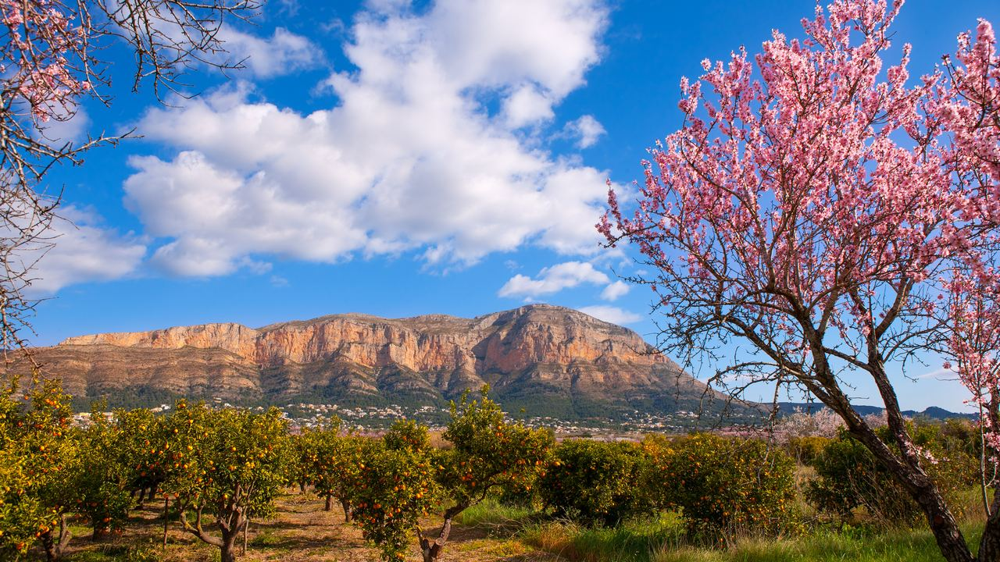
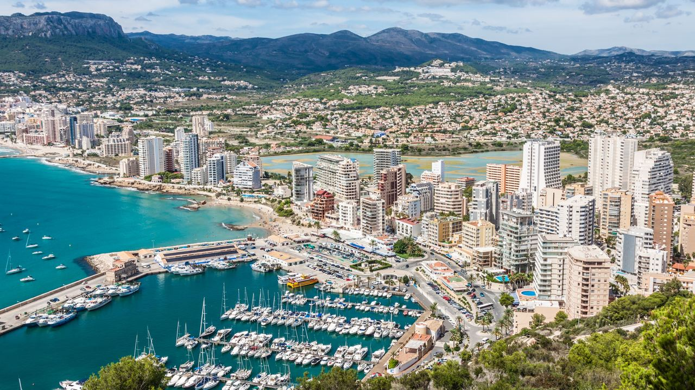
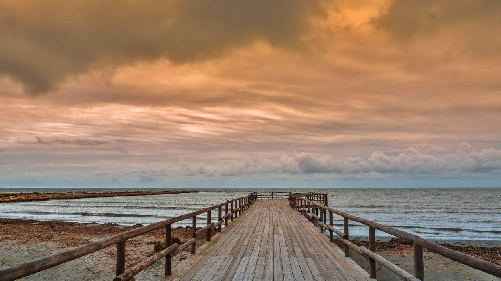
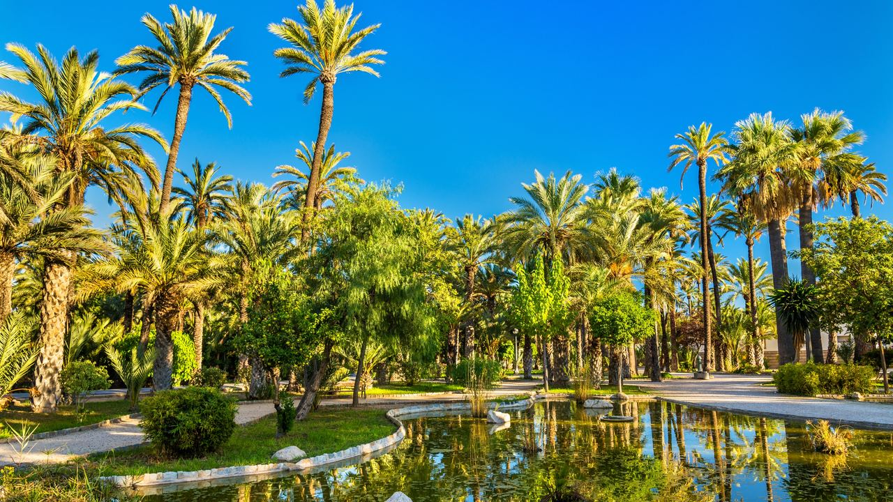
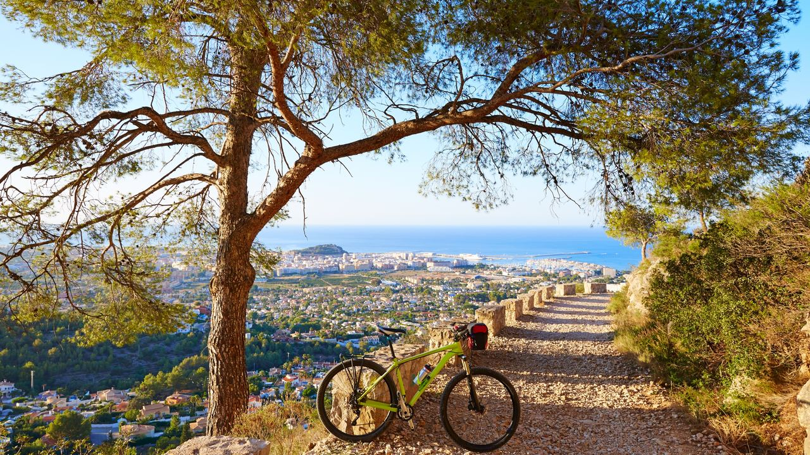

Vivir en España · Clima
El clima en Alicante – Mes a mes
 Por Lucyna Gacek · · actualizado · 4 min de lectura
Por Lucyna Gacek · · actualizado · 4 min de lectura

En resumen: Alicante es una de las ciudades más soleadas y secas de Europa, con unas 2.850 horas de sol y solo unos 300 mm de lluvia al año. En invierno los días suelen rondar los 17–18 °C y en verano los 30–31 °C, con noches cálidas. El mar está más caliente en agosto (unos 27 °C). Para la playa, de junio a septiembre; para pasear y ver casas, primavera y otoño.
Se suele decir que Alicante tiene 300 días de sol al año. Las cifras oficiales son casi igual de buenas: la AEMET registra unas 2.850 horas de sol y muy poca lluvia. Pero cada estación es distinta, y el mejor mes depende de si viene a la playa, a hacer rutas o a buscar casa. Esto es lo que puede esperar mes a mes.
El clima de Alicante en pocas palabras
Alicante tiene un clima mediterráneo seco. Las montañas del interior protegen la costa y el mar suaviza los inviernos y hace los veranos menos extremos que en el interior peninsular.
- Sol: unas 2.850 horas al año, de las más altas de Europa.
- Temperatura media: unos 18 °C anuales.
- Lluvia: unos 300 mm al año en unos 37 días, sobre todo en otoño.
- Heladas y nieve: casi nunca en la costa.
Temperaturas mes a mes
Medias redondeadas de la ciudad de Alicante (AEMET, 1991–2020) y temperaturas habituales del mar en la costa.
| Mes | Día (máx. media) | Noche (mín. media) | Mar |
|---|---|---|---|
| Enero | 17 °C | 6 °C | 14 °C |
| Febrero | 18 °C | 7 °C | 14 °C |
| Marzo | 20 °C | 9 °C | 14 °C |
| Abril | 21 °C | 11 °C | 15 °C |
| Mayo | 24 °C | 14 °C | 18 °C |
| Junio | 28 °C | 18 °C | 22 °C |
| Julio | 30 °C | 21 °C | 25 °C |
| Agosto | 31 °C | 21 °C | 27 °C |
| Septiembre | 29 °C | 19 °C | 25 °C |
| Octubre | 25 °C | 15 °C | 22 °C |
| Noviembre | 21 °C | 10 °C | 19 °C |
| Diciembre | 18 °C | 7 °C | 16 °C |
Las localidades del interior, como Elche u Orihuela, son algo más calurosas en verano y más frescas en las noches de invierno. Más al norte, en Jávea y Dénia, el clima es algo más verde y húmedo.
Primavera (marzo a mayo)

Días de 20–25 °C, tardes frescas y el campo más verde del año. Los almendros del interior florecen ya a finales de enero. El mar todavía está fresco (14–18 °C), pero es la época perfecta para senderismo, golf, bici y escapadas urbanas.
Verano (junio a septiembre)

Calor, sol y casi nada de lluvia. En la costa se alcanzan 30–31 °C, la humedad hace que la sensación sea mayor y en julio y agosto las noches suelen superar los 21 °C. El mar llega a 25–27 °C. Julio y agosto son los meses con más gente en playas y paseos; junio y septiembre son más tranquilos e igual de cálidos.
Otoño (octubre y noviembre)

La estación favorita de muchos residentes. En octubre los días siguen rondando los 25 °C y el mar aún permite bañarse. Es también cuando cae la mayor parte de la lluvia del año, a menudo en tormentas cortas e intensas, la DANA o gota fría. Suelen pasar en uno o dos días, pero son un motivo para consultar los mapas de inundabilidad antes de comprar en una zona baja.
Invierno (diciembre a febrero)

Suave y luminoso. Con 17–18 °C de día, comer en una terraza al sol en enero es lo normal, aunque por la noche se baja a 6–7 °C. Las casas de la costa están pensadas para el calor, no para el frío, así que un buen aislamiento y una bomba de calor (aire acondicionado que también calienta) marcan la diferencia. El invierno es tranquilo, sin aglomeraciones y con vuelos y alquileres más baratos.
¿Cuál es la mejor época para ir a Alicante?
- Vacaciones de playa: de junio a septiembre; junio y septiembre, con menos gente.
- Turismo, senderismo y golf: de marzo a mayo y de octubre a noviembre.
- Huir del frío: de diciembre a febrero.
- Ver viviendas: primavera y otoño. Verá la casa con buen tiempo y podrá comprobar en un día más fresco cómo se nota por dentro.
Qué supone el clima al comprar una vivienda
El clima suave es una de las grandes razones por las que mucha gente vive en la Costa Blanca todo el año. Al ver una vivienda, fíjese en la orientación (las terrazas al sur tienen sol en invierno, pero pueden ser muy calurosas en agosto), el aislamiento, el aire acondicionado con bomba de calor y si está en zona inundable. En nuestra guía de propiedades cerca del mar explicamos cómo consultar los mapas de inundabilidad.
Preguntas frecuentes
¿Hace calor en Alicante en invierno?
Más bien templado. De día suele haber 17–18 °C y sol, y de noche unos 6–7 °C. A mediodía se puede estar fuera, pero por la noche hace falta chaqueta.
¿Cuándo se puede uno bañar en el mar en Alicante?
Desde mediados de junio hasta octubre, con el agua a 22–27 °C. Agosto es el mes más cálido.
¿Cuál es el mes más lluvioso en Alicante?
Normalmente septiembre, seguido de octubre. La lluvia suele llegar en tormentas cortas e intensas, no en largas temporadas.
¿Nieva en Alicante?
En la costa, casi nunca. Algunos inviernos nieva en las montañas del interior.
Cada estación tiene su encanto

En Alicante no hay un único mes perfecto, pero hay muy pocos malos. Elija la estación que encaje con lo que quiere hacer y, si piensa quedarse más tiempo, cuéntenos qué busca. Le enseñaremos viviendas cómodas todo el año.
Fuentes: AEMET – climate normals for Alicante (1991–2020) · Puertos del Estado – sea temperature data